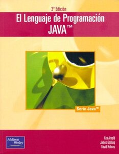

James Gosling además de haber hecho grandes avances informáticos, escribió varios libros sobre programación,
especialmente en Java. Los más destacados son los siguientes:
The NeWS Book: An Introduction to the Network / Extensible Window System, publicado en 1989, fue su primera
publicación y fue conjunta con David SH Rosenthal y Michelle J. Arden.
The Java lenguaje Environment: A white paper, publicado en 1996, fue su segundo libro publicado, pero el
primero que trataba sobre Java. Fue una colaboración con Henry McGilton.
The Java Application Programming Interface, Volumen 1: Paquetes principales, publicado en 1996.
Posteriormente vendría el Volumen 2: Kit de herramientas y subprogramas de ventana, publicado el mismo año.
El lenguaje de programación Java, publicado también en el año 1996. Más adelante fue sacando varias ediciones
de este libro, estas ediciones se sacaron en los años:
1996 (mismo año de la primera edición). Esta edición fue llamada Segunda edición del lenguaje de
programación Java
2000. Tercera edición con el mismo título que los anteriores.
2005. Cuarta y última edición de este libro.

La especificación en tiempo real para Java, publicado en el año 2000. En dicho libro colaboró con
Gregory Bollella, Benjamin Brosgol, Peter Dibble, Steve Furr, David Hardin y Mark Turnbull. Posteriormente
llegarían más ediciones de este libro, llamadas:
La especificación del lenguaje Java, segunda edición. Publicada en el año 2000.
La especificación del lenguaje Java, tercera edición. Publicada en el 2005.